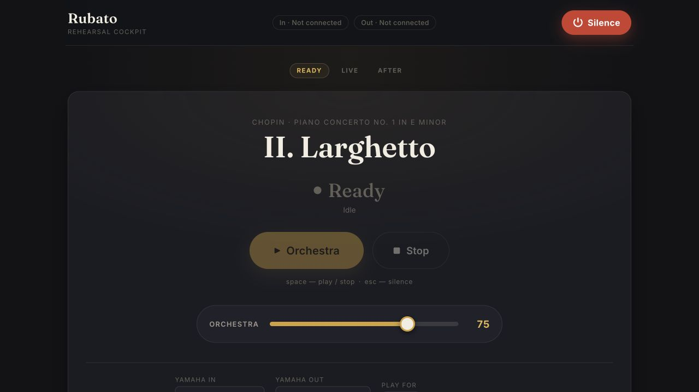
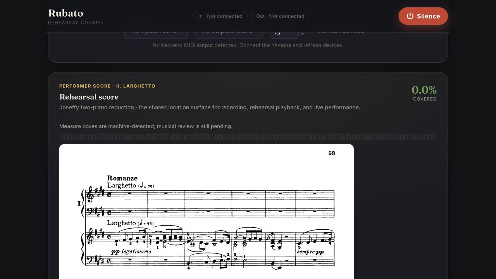
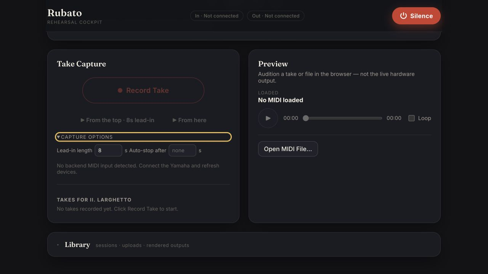

ru·ba·to — robbed time; the expressive stretching of tempo a soloist takes, and an ensemble follows.
An AI orchestra that follows you through a concerto — live, on your own machine.

The Rehearsal Cockpit — Chopin, Piano Concerto No. 1, II. Larghetto
The problem
Practicing a concerto alone means playing to a fixed track that never breathes with your phrasing, never lingers at a fermata, never lets you take time. A real orchestra follows the soloist. Rubato is an attempt to give one pianist that experience at home — built around a single piece, a single piano, and a lot of listening.
Score-following and a tempo model keep the orchestra locked to your live playing — pushing forward, holding back, and waiting at cued entries.
Local-first and symbolic-first. MIDI in, MIDI or hosted-VST audio out. No account, no server, no cloud inference, no raw-audio pipeline.
Record takes, review their alignment to the score, page through the reduction, and iterate. A rehearsal cockpit, not a black box.
The signal flow
A deterministic, low-latency pipeline runs entirely on the local machine — no step leaves your computer.
Your Yamaha / CoreMIDI notes arrive and pass through latency calibration and event ingress.
The Matchmaker / Follower locates you in the score, note by note, as you play.
It estimates your tempo and applies per-section rules — follow, lead, hold, or stop.
Orchestral events are scheduled to land with you, compensating for output latency.
Synchronized MIDI or REAPER-hosted VST audio — a hardware synth, a plugin host, or both.
The cockpit
A local web console for choosing devices, playing the orchestra, capturing takes, and reviewing them against the score.


Honest status
A local research instrument built around one rehearsal setup — not a packaged product. Here's exactly where it stands.
Solid today
Experimental
performance_ready: false while timeline & latency are reviewedQuickstart
Python 3.11/3.12, uv, and Node.js. A MIDI piano is optional for exploring, required for the live path.
# get the code git clone https://github.com/ericberic/rubato-music.git cd Rubato uv sync --extra dev --extra live # build the UI, start the server, open the cockpit ./scripts/dev-server.sh # → http://localhost:8000/app/
Open source, MIT-licensed code, and built in the open. Contributions and score-following ideas welcome.